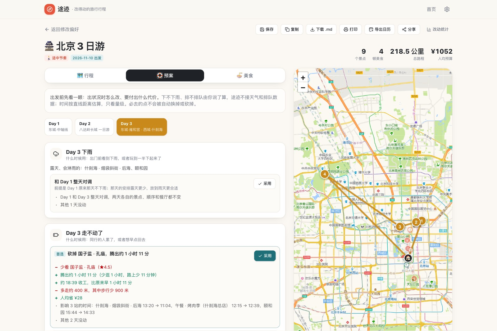

途迹 Tuji Travel
先标必去、可选、可放弃，途迹排出逐日行程，并把下雨、排队、走不动时的预案提前算好；路上出了状况，只改受影响的那一段，代价算给你看。无需注册，行程保存在自己的浏览器里。

点击后在窗口内加载真实应用，可直接生成行程，试试砍点、换点和预案。新窗口打开 ↗


项目背景
做自由行攻略，花几个小时把景点、顺序、餐厅排好之后，真正难受的是"要改"：出门发现下雨，热门景点排队一个小时，同行的人下午走不动了。这时候只有两个选择：全部重排，前面花的时间归零；或者将就着走，体验打折。
结合 OTA 行研复盘现有做法：对话式的 AI 助手靠多轮对话重新生成整份行程；通用 AI 给的是一段文本，不能校验，也不能只改一处；手动拖拽类工具把重排的计算留给了用户。它们都在优化"第一次排得准"，没有产品在降低"改一下"的成本。
痛点挖掘与定位
| 目标用户 | 典型场景 | 核心诉求 |
|---|---|---|
| 自由行学生 | 2–4 天去一座城市，行程排得满，遇到下雨或排队就乱 | 不用从头再排，知道砍掉哪个损失最小 |
| 带家人出行的人 | 老人孩子下午走不动，要临时减量 | 必去的保住，其余的砍得有理有据 |
| 订了票的旅行者 | 某个点没约上票，或者当天临时闭馆 | 换一天去，或者换个相近的，别影响其他安排 |
判断：核心痛点是排完不敢改，于是把产品承诺定为一句话：行程改一下就好。北极星指标是改动轮次，即一次变更从想改到改完的操作次数，目标 ≤2；同时看放弃率和撤销次数，防止靠"把改动做难"来压低轮次。
需求分析与优先级决策
把"改得动"拆成 6 项能力，按依赖顺序排成三周，每周设一个闸门；过不了闸门就回去改算法，不加功能。
| 周次 | 能力 | 闸门 |
|---|---|---|
| 第 1 周 | 三档意愿（必去 / 可选 / 可放弃）、代价量化 | 能演示"砍一个点损失多少"，讲得清 |
| 第 2 周 | 替代点检索、四类预案 | 每个景点去不了时，都有砍掉以外的方案 |
| 第 3 周 | 行中重排（只重算没走的站）、改动轮次埋点 | 轮次可统计、可导出 |
同时做减法，与"改得动"无关的不上线：
- AI 生成任意城市：生成的数据没法核验，和"算不准的不下断言"冲突。
- 多方案对比：切换方案会丢掉手动调整，和"改得动"正好相反。
- 预算页、贴士页、分享二维码：与变更无关。每天和整份行程的花费合计保留，因为改动代价要用到它。
- 城市：只做有内置数据的 9 座。
方案产出
三档意愿
每个景点标必去 / 可选 / 可放弃。必去是硬约束，任何自动方案都不会替换或砍掉它；可放弃是预备牺牲品，时间不够先砍它；没标的都是可选。
改动代价
砍一个点之前先看代价：少看什么、腾出多久（少逛 + 路上）、几点收工、路程和花费怎么变、后面哪几站的时间跟着动、有没有新的时间冲突。每次改动之后留一张回执，可以一键撤销。
四类预案
| 状况 | 给出的方案 |
|---|---|
| 这天下雨 | 露天的点换成室内的，必去不动；或者和露天更少的那天整天对调 |
| 走不动了 | 按三档列出先砍谁，可放弃的排最前，各带能腾出的时间 |
| 某个点去不了 | 必去先给换天，可放弃先给砍掉，其余先给相近的替代 |
| 某个点排队太久 | 最晚几点必须进场或离开、再晚哪一站会出问题；然后是再排一会儿、放弃、换附近的、改天 |
三条设计原则
- 给约束，不给预测：不报"13:47 到"，只报"最晚 14:59 进场，再晚闭园前就逛不完"，并留出余量。
- 只动必要的：一次改动只重排受影响的那一天；路上走完一站点一下，之后只重算还没走的站。
- 算不准的不下断言：下不下雨、排不排队由用户自己说，途迹不接天气和排队数据；路上的时间是估算，界面上只说"约"。
开发上线与验证
- 版本记录：每个版本在 PROGRESS.md 记录问题、改动与验证方式；发布前固定跑类型检查、城市数据校验与构建。
- 闸门是实测出来的：第 2 周原定的闸门是"每个必去点配一个替代"。用北京、成都、西安 68 个景点实测，颐和园、长城、熊猫基地按规则找不到替代，找得到的也多是"故宫换北海公园"这种用户不会接受的。于是改成"必去只换天，其余才找替代"，再扩到 9 城 198 个景点。
- 覆盖检查进仓库：一个脚本对任意一份行程打印全部预案，并统计每个景点去不了时有没有砍掉以外的方案、每个雨天有没有改法，结果可复现。
- 数据：9 座城市 198 个景点、172 家餐厅通过校验脚本；每个景点标了室内 / 半室内 / 露天，雨天预案据此判断。
- 发布：GitHub Actions 自动构建并发布到 GitHub Pages；中英双语 README、MIT 许可证。
结果与迭代
| 指标 | 结果 |
|---|---|
| 去不了时的方案覆盖 | 9 城 2 / 3 / 4 日游共 27 份行程、271 个景点，全部有替代或换天方案 |
| 雨天改法覆盖 | 70 个含露天景点的行程日中 62 个有改法；其余 8 个只能带伞或砍点，界面上如实说明 |
| 改动轮次（按设计） | 7 个改动入口中 6 个 2 步内完成：拖拽换序 1 步；砍点、先砍谁、出状况了、换餐厅、添加景点 2 步；从预案页针对某一站操作 3 步 |
| 轮次统计 | 已上线：记录每次变更的轮次、耗时、类型，以及放弃率和撤销次数，可导出 |
已知局限：
- 路上的时间按直线距离 × 1.3 估算，没有真实路况；"最晚几点"留了余量，但仍是估算。
- 景点的室内 / 半室内 / 露天是凭常识标注的，没有逐一核验。
- 没有"已订票、别动"的锁：必去不会被替换或砍掉，但换天方案仍可能挪动一个已订票的点。
明确未做的边界
- 不接天气、排队、路况等实时数据，状况由用户自己声明。
- 不做账号与云同步，行程只存本机，分享用链接。
- 不抓取真实评论，餐厅评价是综合整理的中立陈述并标明来源性质。
- 不做多城市联程与多人协作。
技术
Vite 8、React 19、TypeScript、Tailwind CSS 4、Leaflet 地图（高德底图，已做坐标转换）、dnd-kit 拖拽、lz-string 分享编码；GitHub Actions + GitHub Pages 部署。借助 Claude Code 独立完成全栈开发。